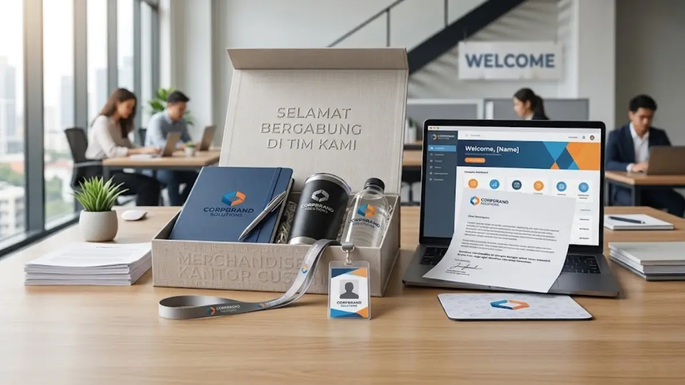

Apa Itu Merchandise Kantor Custom?
Merchandise kantor custom adalah kategori barang fungsional kantor, seperti alat tulis, notebook, tumbler, hingga tas kerja, yang dicetak dengan logo, warna, atau elemen visual khas perusahaan. Produk ini berbeda dari souvenir umum karena dirancang khusus untuk digunakan dalam lingkungan kerja sehari-hari maupun acara resmi perusahaan.
Secara umum, merchandise kantor custom digunakan untuk tiga tujuan utama: memperkuat identitas visual perusahaan, menjadi media promosi yang berjalan bersama penggunanya, dan menjadi bentuk apresiasi kepada karyawan atau klien.
Karena sifatnya yang dipakai berulang, merchandise kantor cenderung memberikan eksposur brand yang lebih tahan lama dibandingkan media promosi sekali pakai.
Bagi perusahaan yang baru merintis program branding internal maupun eksternal, memahami cakupan produk ini menjadi langkah awal sebelum menentukan jenis dan jumlah pesanan.
Mengapa Merchandise Kantor Custom Penting bagi Perusahaan?
Merchandise kantor custom penting karena berfungsi sebagai media branding yang konsisten, murah secara jangka panjang, dan mudah diterima oleh berbagai kalangan penerima, mulai dari karyawan hingga klien eksternal.
Beberapa alasan yang membuat merchandise kantor custom banyak digunakan perusahaan:
- Membentuk kesan profesional pertama saat diberikan kepada klien atau mitra bisnis baru.
- Meningkatkan rasa memiliki karyawan terhadap perusahaan melalui produk bertema identitas brand.
- Berfungsi sebagai pengingat visual brand yang terus terlihat dalam aktivitas kerja sehari-hari.
- Mendukung acara internal seperti onboarding, ulang tahun perusahaan, dan penghargaan karyawan.
- Menjadi pelengkap strategi promosi pada pameran, seminar, atau kegiatan business gathering.
Menurut laporan industri promotional products, produk merchandise yang bersifat fungsional cenderung disimpan dan digunakan penerima dalam jangka waktu lebih dari enam bulan setelah diterima, sehingga nilai eksposur brand berlangsung lama dibandingkan iklan digital sekali tayang.
Jenis Merchandise Kantor Custom yang Umum Digunakan
Jenis merchandise kantor custom bervariasi mulai dari alat tulis, aksesori meja kerja, hingga produk digital pendukung kerja yang dicetak identitas perusahaan.
Kategori yang umum dipesan perusahaan antara lain:
- Alat tulis kantor, seperti pulpen, notebook, dan sticky notes bertema brand.
- Tumbler dan botol minum custom yang digunakan sehari-hari oleh karyawan.
- Tas kerja atau tote bag dengan cetakan logo perusahaan.
- Aksesori meja kerja, seperti mousepad, organizer, dan gantungan lanyard.
- Powerbank atau kabel data custom sebagai pelengkap kebutuhan kerja mobile.
Pemilihan jenis produk biasanya disesuaikan dengan tujuan acara. Untuk event formal seperti seminar atau konferensi, produk seperti notebook dan pulpen lebih sering dipilih karena kesan profesionalnya.
Sementara untuk apresiasi karyawan, tumbler atau tas kerja lebih umum digunakan karena sifatnya yang personal dan dipakai sehari-hari.

Bagaimana Cara Memilih Merchandise Kantor Custom yang Tepat?
Cara memilih merchandise kantor custom yang tepat adalah dengan menyesuaikan jenis produk terhadap tujuan acara, karakter penerima, dan anggaran yang tersedia agar hasilnya efektif secara branding maupun biaya.
Beberapa faktor yang perlu dipertimbangkan:
- Tujuan penggunaan, apakah untuk promosi eksternal, apresiasi internal, atau kelengkapan event tertentu.
- Karakter penerima, karena preferensi klien korporat cenderung berbeda dengan preferensi karyawan internal.
- Anggaran yang tersedia, karena harga merchandise sangat bervariasi tergantung bahan dan teknik cetak.
- Daya tahan produk, karena barang yang mudah rusak dapat menurunkan kesan profesional brand.
- Kesesuaian warna dan desain dengan identitas visual perusahaan agar tetap konsisten di berbagai materi promosi.
Perusahaan yang mempertimbangkan faktor-faktor ini secara umum mendapatkan hasil merchandise yang lebih relevan dan lebih efektif digunakan dalam jangka panjang, dibandingkan pemesanan tanpa perencanaan yang jelas.
"Merchandise kantor custom merupakan investasi branding yang efektif apabila direncanakan dengan matang, mulai dari pemilihan jenis produk, kesesuaian desain, hingga kesesuaian anggaran."
— Anggun Tri Stya, Penulis Merchandise Kantor
Kesalahan Umum saat Memesan Merchandise Kantor Custom
Kesalahan umum saat memesan merchandise kantor custom biasanya terjadi karena kurangnya perencanaan desain, pemilihan bahan yang tidak sesuai kebutuhan, dan pemesanan mendekati tenggat acara.
Beberapa kesalahan yang sering ditemui:
- Memilih produk hanya berdasarkan harga murah tanpa mempertimbangkan daya tahan dan kualitas cetak.
- Tidak menyiapkan desain logo dalam format yang sesuai untuk proses cetak, sehingga hasil akhir kurang maksimal.
- Memesan dalam waktu mendesak sehingga tidak ada waktu untuk revisi desain atau pengecekan sampel.
- Mengabaikan konsistensi warna brand pada produk yang dipesan.
- Tidak mempertimbangkan fungsi produk dalam kehidupan kerja sehari-hari penerima, sehingga barang jarang digunakan setelah diterima.
Menghindari kesalahan ini umumnya dapat dilakukan dengan menyiapkan brief desain lebih awal, memesan sampel sebelum produksi massal, dan memberi waktu produksi yang cukup, terutama untuk pesanan dalam jumlah besar.
Tips Memaksimalkan Manfaat Merchandise Kantor Custom
Tips memaksimalkan manfaat merchandise kantor custom adalah dengan memilih produk yang relevan dengan aktivitas sehari-hari penerima serta menjaga konsistensi identitas visual pada seluruh lini produk.
Beberapa tips praktis yang dapat diterapkan:
- Pilih kombinasi produk, bukan hanya satu jenis, untuk memberikan variasi dan kesan lebih lengkap.
- Gunakan warna dan tipografi yang konsisten dengan pedoman brand perusahaan.
- Sesuaikan jumlah pesanan dengan skala acara agar tidak terjadi kelebihan maupun kekurangan stok.
- Simpan dokumentasi desain final untuk memudahkan pemesanan ulang di kemudian hari.
- Libatkan tim internal dalam proses pemilihan produk agar merchandise lebih relevan dengan kebutuhan pengguna.
Perbandingan Merchandise Kantor Custom Berdasarkan Kebutuhan Perusahaan
Perbandingan kebutuhan merchandise kantor custom dapat dilihat dari tujuan penggunaannya, mulai dari kebutuhan harian karyawan, penguatan kesan profesional, hingga cakupan layanan wilayah.
Secara umum, kebutuhan tersebut dapat dibagi menjadi tiga kelompok besar yang saling melengkapi:
- Kebutuhan fungsional harian, yang berfokus pada produk office essentials yang dipakai rutin oleh karyawan.
- Kebutuhan estetika dan kesan profesional, yang berfokus pada pemilihan warna dan desain, misalnya konsep monokrom untuk kesan formal.
- Kebutuhan cakupan layanan, yang berkaitan dengan ketersediaan produk dan jasa pembuatan merchandise di berbagai wilayah, termasuk kota-kota besar di Indonesia.

Kesimpulan
Merchandise kantor custom merupakan investasi branding yang efektif apabila direncanakan dengan matang, mulai dari pemilihan jenis produk, kesesuaian desain, hingga kesesuaian anggaran.
Perusahaan yang memperhatikan fungsi, kualitas, dan konsistensi identitas visual pada merchandise umumnya mendapatkan hasil promosi yang lebih tahan lama dibandingkan media promosi sekali pakai.
Sebelum memesan dalam jumlah besar, sebaiknya siapkan brief desain yang jelas, tentukan tujuan penggunaan, dan berikan waktu produksi yang cukup agar hasil akhir sesuai dengan identitas brand perusahaan.